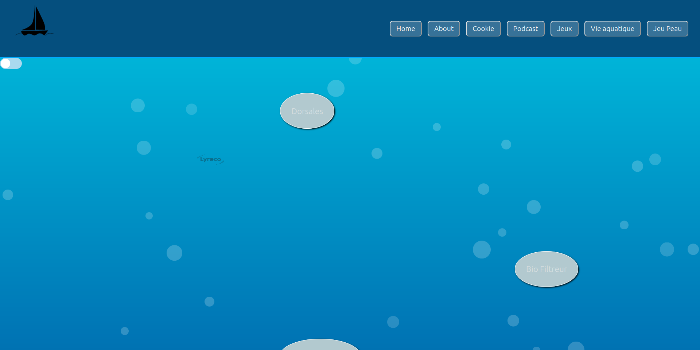
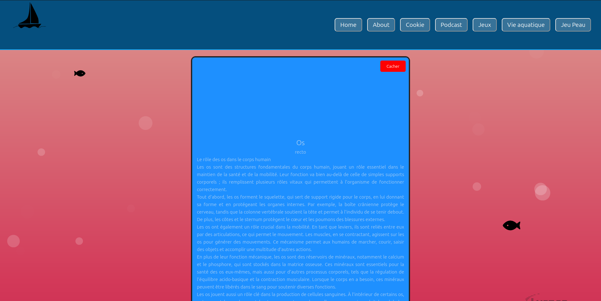

La Nuit de l'Info
Un défi technologique collaboratif
Contexte du Projet
La Nuit de l'Info est un événement national annuel qui rassemble des équipes d'étudiants autour d'un défi commun : développer une application web en un temps limité, généralement 15 heures. L'objectif est de répondre à une problématique ou un thème donné en mobilisant des compétences techniques et organisationnelles dans un cadre collaboratif. Notre équipe de 8 personnes a travaillé sur ce projet dans un esprit de coopération et de créativité. Nous avons utilisé le framework Vue.js pour réaliser une solution répondant aux critères fixés par le thème de l'année, avec des contraintes précises :
- Durée limitée: 15 heures intensives pour concevoir, développer et livrer une application fonctionnelle.
- Travail en équipe: une coordination essentielle entre les membres pour répartir les tâches efficacement.
- Thème imposé: Et si l’océan était un corps humain ?
- Sujet porté par : Race For Water et le Bureau de la Nuit de l'Info 2024
Méthodes de Travail et Résultats Obtenus
Pour mener à bien ce projet, nous avons adopté une méthodologie agile en nous concentrant sur une organisation claire et une communication efficace au sein de l'équipe. Les principales étapes de notre travail étaient les suivantes :
- Répartition des tâches : Chaque membre de l’équipe a pris en charge une partie spécifique du projet, comme le développement des composants, le design de l’interface utilisateur ou la gestion des données.
- Prototypage rapide : Nous avons esquissé une maquette pour définir les fonctionnalités principales et leur présentation visuelle.
- Développement itératif : Le projet a été construit par étapes, avec des sessions de tests régulières pour garantir la qualité du code et la cohérence fonctionnelle.
Malgré les contraintes de temps, nous avons réussi à développer une application fonctionnelle répondant au thème imposé. Voici les principaux résultats :
- Interface utilisateur fluide : Une application intuitive avec des composants interactifs créés grâce à Vue.js.
- Respect des délais : Toutes les fonctionnalités de base ont été intégrées dans le temps imparti.


Lien de la réalisation : ici
Compétences Développées
HTML
CSS
VUE.js
Git (GitLab)
Ma Contribution
Dans ce projet, j’ai joué un rôle central en :
- Développant la structure principale de l’application avec Vue.js.
- Créant des composants spécifiques tels que (exemple : "le formulaire de connexion").
- Intégrant l'interface utilisateur avec les fonctionnalités backend.
Regardez la démonstration :